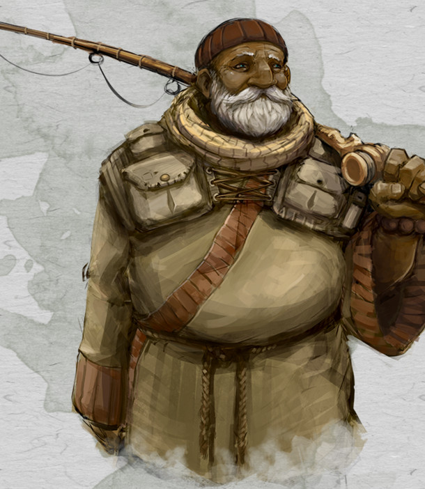

Moine humain niv 1
Karad Malar
Moine 1 (0 PX)
Humain (h), loyal bon
Ermite
[ CARACTÉRISTIQUES ]
For 12 (+1) Dex 16 (+3) Con 13 (+1)
Int 10 (+0) Sag 16 (+3) Cha 10 (+0)
[ MAÎTRISES ]
Bonus de maîtrise +2
Sauvegardes For +3, Dex +5
Compétences Discrétion +5, Médecine +5, Perspicacité +5, Religion +2 (Perception passive 13)
Armes armes courantes, épée courte
Armures -
Outils ustensiles de cuisinier, kit d'herboriste
Langues commun, elfique, nain
[ COMBAT ]
pv 9 ; DV 1d8
Init +3 ; Vitesse 9 m
CA 16 (sans armure)
Bâton. Corps à corps : +3 (1d6+1 contondant ; polyvalente (1d8))
Épée courte. Corps à corps : +5 (1d6+3 perforant ; finesse, léger)
Fléchette. Distance : +5 (1d4+3 perforant ; finesse, lancer (portée 9 m/36 m))
[ CAPACITÉS & TRAITS ]
Défense sans armure *
Arts martiaux (1d4)
Découverte
[ ÉQUIPEMENT ]
Bâton (canne à pêche), épée courte, fléchette (10), kit d'herboriste, sac à dos, pied-de-biche, marteau, piton (10), torche (10), boite d'allume-feu, rations/1 jour (10), gourde, corde en chanvre de 15 m, étui à cartes ou parchemins, couverture, vêtements communs
Coût de l'équipement 35 po ; Poids de l'équipement 39 kg
5 po
Poids des pièces 0.05 kg
[ PERSONNAGE ]
Taille M / 1,85 m / 88 kg ; Âge 37 ans
Yeux bleus ; Peau blanche ; Cheveux gris
Apparence du personnage Karad Malar est un humain de grande taille à la carrure épaisse et aux épaules larges. Son visage, aux traits grossiers, est rond et souriant, et ceinturé d'une barbe et d'une moustache fournies et bien taillées, dont certains poils blanchissent déjà. Ses cheveux grisonnants et lisses sont assez courts et d'apparence peu soignée. Vêtu d’une épaisse robe de bure verdâtre, croisée sur le devant et enserrée à la taille par une corde épaisse faisant ressortir sa bedaine, il arbore fièrement un bonnet rouge qui cache une calvitie naissante, et dans le repli duquel il cache secrètement ses accessoires de rechange pour la pêche. De nombreuses pochettes de rangement qu’il porte sur la poitrine, accrochées à des épaulettes, viennent compléter ses accessoires de rangement.
Trait Je ressens une immense empathie pour tous ceux qui souffrent.
Idéal Logique. Les émotions ne doivent pas brouiller notre sens de ce qui est vrai et faux, ou notre pensée logique.
Lien Je suis toujours en quête de l'illumination. Je la poursuivais dans mon isolement, et elle m'échappe encore.
Défaut Je suis prêt à prendre trop de risques pour découvrir un peu de connaissances perdues.
Passé du personnage Karad, abandonné à la naissance devant la porte du monastère isolé où il a grandi, n'a jamais su qui étaient ses vrais parents. Les moines l'ont recueilli, l'ont élevé et l'ont toujours traité avec respect et bienveillance, au point de devenir, avec le temps, des amis, des enseignants, des parents et des confidents. Démontrant très tôt une empathie puissante et infinie à l'égard de toutes les formes de vie, les moines n'ont eu de cesse de développer ce don pour faire grandir son âme et son esprit et l'éveiller à la souffrance d'autrui, à l'absolue nécessité de l'Amour, de la Vérité et du Don de Soi. Néanmoins, cette empathie était si forte et si envahissante qu'il a fallu lui apprendre à canaliser cette émotion pour ne pas laisser son jugement se brouiller, et lui permettre de toujours agir avec discernement et logique. Patiemment et savamment, il a donc été instruit dans les arts de l'esprit mais aussi du corps, afin de placer cette âme généreuse dans un corps sain et fort, capable de contenir toute cette bonté. Karad, après avoir passé tellement d’années à s’emplir l'esprit de sagesse millénaire et à entraîner son corps à la science du combat, a désormais hâte de découvrir le monde pour s'éveiller à de nouvelles formes d'élévation de l'esprit et du corps. Ayant compris que l'isolement était un handicap pour voyager loin et voyager sûr, il est à présent en quête de compagnons pour lui permettre d'assouvir sa quête de nouvelles connaissances, n'ayant pas peur de prendre des risques pour y parvenir. D'un naturel liant et bon vivant, toujours prêt à rire et à prendre soin des autres, il sait que le lien tissé avec chacune de ses rencontres est le ferment d'une vie accomplie, surtout quand il est associé à la pêche en rivière. Sa voix grave et posée est apaisante et inspire facilement confiance, ce sentiment étant largement renforcé par son regard pénétrant, sa gestuelle maîtrisée et une apparence légèrement bedonnante, liée à sa tendance peu avouable à faire bonne chère. En plus d’un bracelet de prière enroulé au poignet droit, dont il fait défiler les grosses perles lors de ses méditations régulières, il porte toujours avec lui, comme un étendard, une longue canne à pêche en bambou extrêmement solide qu’il utilise pour subvenir autant à sa grande passion, la pêche en rivière, qu’à des besoins vitaux essentiels, se nourrir. Son ultime secret réside enfin dans le maniement de cette canne à pêche, qui, lorsqu'elle ne lui sert pas à pêcher, lui sert aussi à se battre, bâton souple et solide en même temps.
[ ÉVOLUTION ]
Les suggestions ci-après sont en lien avec le passé de Karad.
Au niveau 2, ajoutez la capacité Ki (2 pts) et Déplacement sans armure (ses pv passent à 15, ses DV à 2d8 et sa vitesse à 12 mètres).
Au niveau 3, choisissez la voie de la Main ouverte et ajoutez les capacités Parade de projectiles et Technique de la main ouverte (ses pv passent à 21, ses DV à 3d8 et son Ki à 3 pts).
Stat et histoire de Mellyrne